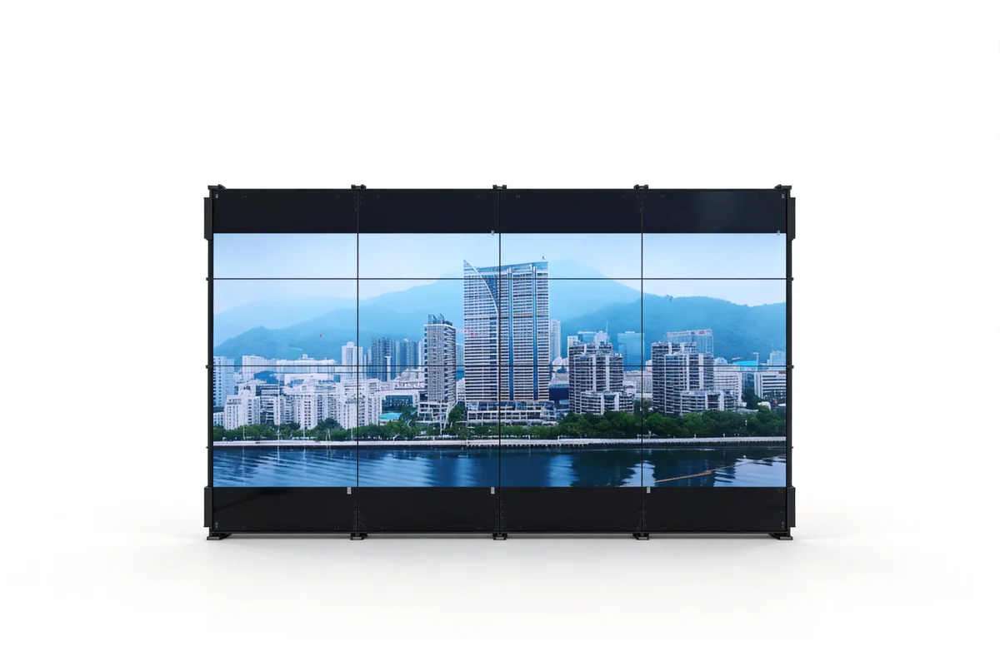
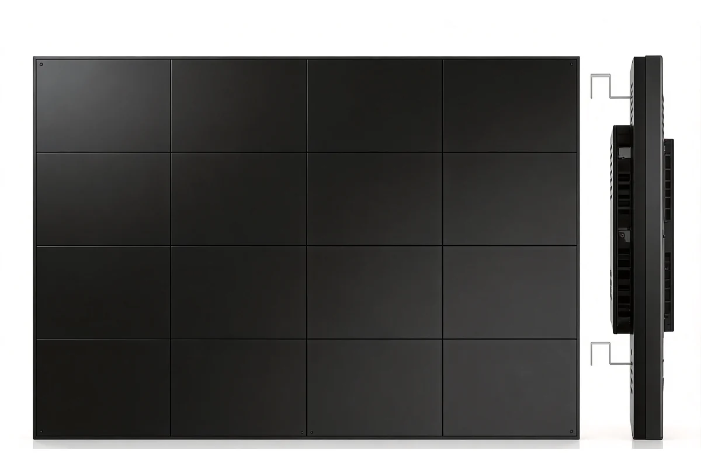
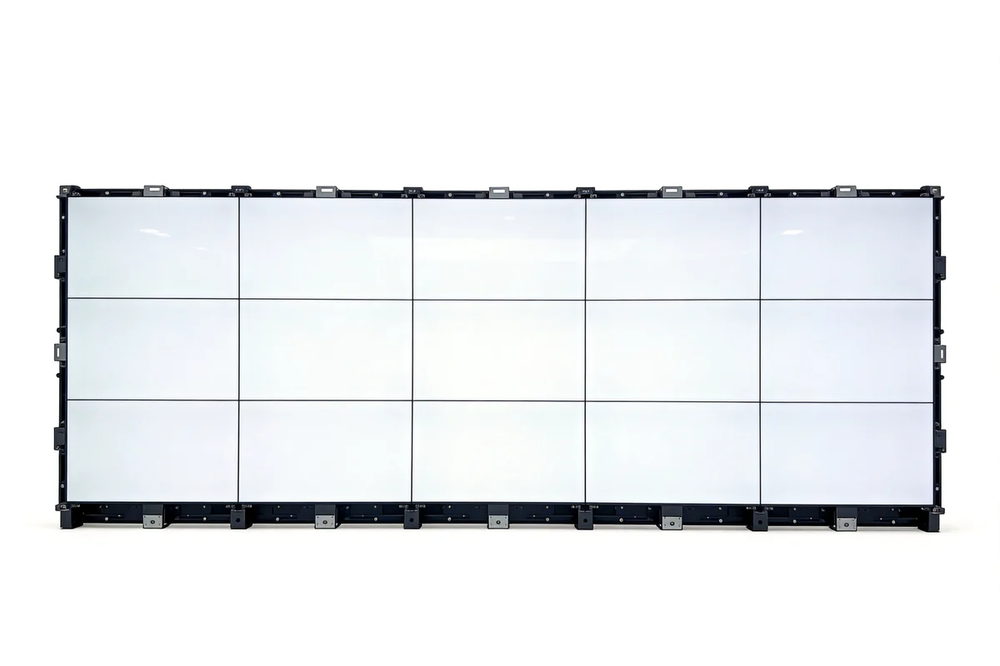
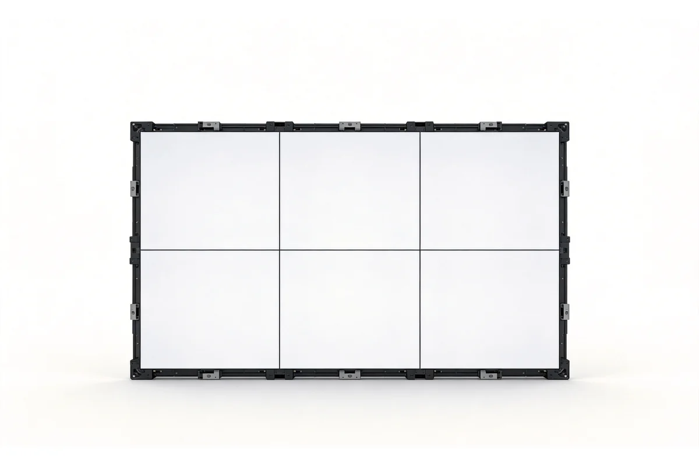
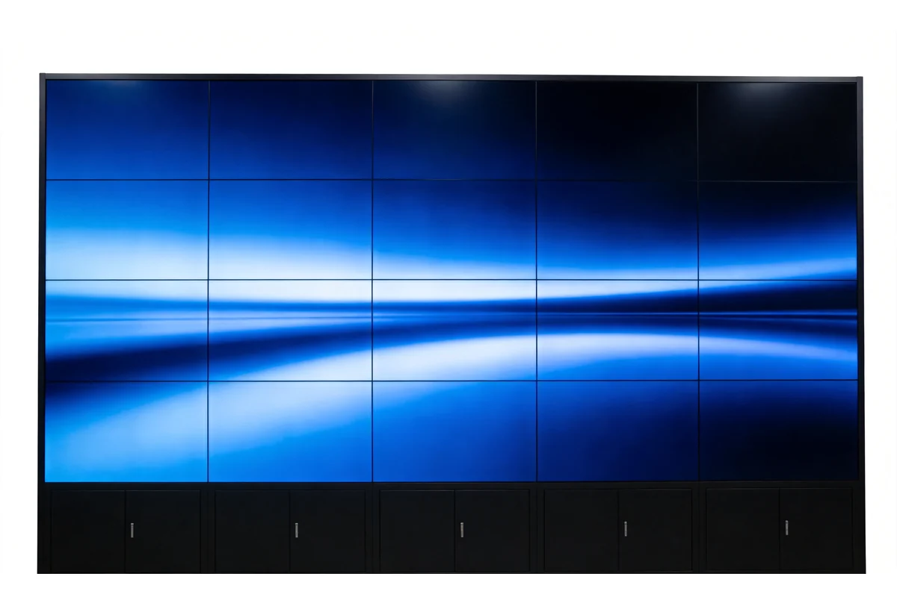
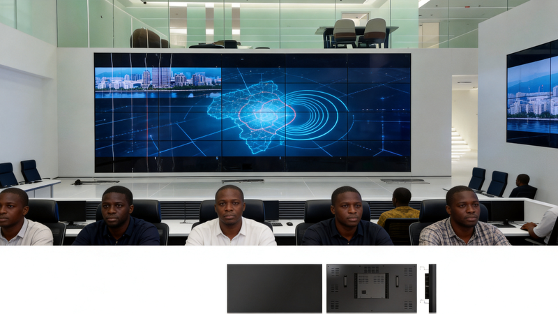

AXLTeco fournit des murs d'images LCD de 46 à 55 pouces à bordures ultra-fines (jusqu'à 0,88 mm), en résolution 4K et fonctionnement continu 24h/24 et 7j/7, associés à des processeurs d'image professionnels pour le découpage multi-fenêtres, le roaming inter-écrans et la commutation flexible des sources — salles de commandement, salles de réunion, showrooms et surveillance.
Bordures ultra-fines
Bordures de 0,88 à 3,5 mm au choix, rendu quasi sans couture même de près.
Affichage 4K UHD
Résolution 3840×2160, angle de vue 178°, couleurs fidèles, confortable pour de longues sessions.
Dispositions flexibles
Modes d'assemblage 2×2, 3×3, 4×4 et plus, portrait ou paysage librement combinés.
Fonctionnement 24/7
Panneaux industriels d'une durée de vie ≥60 000 heures pour un affichage ininterrompu.
Entrées multi-sources
HDMI, DVI, VGA, DP et SDI avec découpage d'image et roaming inter-écrans.
Calibration colorimétrique
Équilibrage automatique de la température de couleur et de la luminosité, écart <3 % sur tout le mur.
Sélection de modèle
Les murs d’images LCD s’organisent par palier de dalle et par topologie : le palier conditionne le nombre de joints et la distance de vision, la topologie conditionne l’acheminement des signaux.
Mur d’images LCD

Dalle 46 pouces
- Dalles compactes pour agencements multi-écrans denses
- Agencements denses vus à courte distance

Dalle 49 pouces
- Dalles standard conciliant joints et résolution
- Salles de réunion et de supervision courantes

Dalle 55 pouces
- Le palier de dalle le plus couramment utilisé
- Halls de commandement et scénarios de réunion

Dalle 65 pouces
- Grandes dalles réduisant le nombre de joints
- Moins de joints pour de grandes images

Topologie et sources du mur
- Mode de raccordement des matrices, processeurs et hôtes
- Dimensionner matrice et câblage selon le nombre de sources
Guide de sélection
| Scénario | Catégorie d’équipement | Critères de choix |
|---|---|---|
| Dalles compactes pour agencements multi-écrans denses | Dalle 46 pouces | Agencements denses vus à courte distance |
| Dalles standard conciliant joints et résolution | Dalle 49 pouces | Salles de réunion et de supervision courantes |
| Le palier de dalle le plus couramment utilisé | Dalle 55 pouces | Halls de commandement et scénarios de réunion |
| Grandes dalles réduisant le nombre de joints | Dalle 65 pouces | Moins de joints pour de grandes images |
| Mode de raccordement des matrices, processeurs et hôtes | Topologie et sources du mur | Dimensionner matrice et câblage selon le nombre de sources |
Interfaces et Compatibilité
Prise en charge de multiples entrées vidéo et du contrôle centralisé, compatible avec les systèmes de traitement et de contrôle courants.
Entrées vidéo
- HDMI × 2
- DVI × 1
- VGA × 1
- DP × 1
- SDI (option)
- BNC × 1
Interfaces de contrôle
- RJ45 (RS-232 sur IP)
- RS-232 / RS-485
- Télécommande IR
- Gestion web
Systèmes compatibles
- Logiciel de gestion Windows
- Systèmes de contrôle Linux
- VMS tiers
- Matrice KVM
Extensions
- Découpage (1/4/9/16)
- Roaming inter-écrans
- Incrustation
- Balayage programmé
Solutions d'Application
Mur Vidéo peut être intégré en profondeur avec les systèmes logiciels et solutions sectorielles AXLTeco pour délivrer une valeur synergique.
IBMS
Plateforme intégrée de gestion de bâtiment pour surveillance et contrôle unifiés.
Valeur Principale:
- Interconnexion systèmes
- Coûts réduits
- Gestion améliorée
Système de Tableau de Bord
Visualisation de données temps réel avec intégration multi-sources et rapports personnalisés.
Valeur Principale:
- Visibilité claire
- Aide à la décision
- Transparence opérationnelle
Bâtiment Intelligent
Surveillance ascenseur, sécurité hall, gestion parking, liaison visiteurs, vérification vidéo incendie.
Valeur Principale:
- Couverture sécurité complète
- Exploitation intelligente
- Économie d'énergie
Ville Intelligente

Réseau vidéo urbain, plateforme agrégation données, commande urgente.
Valeur Principale:
- Gouvernance urbaine numérique
- Réponse urgente accélérée
- Partage ressources
Avantages et garantie
Compatible avec les Marques Principales
Équipements compatibles avec Hikvision, Dahua, ZKTeco et autres marques principales, supportant ONVIF, GB/T 28181 et autres protocoles standard.
Service Clé en Main
De la conception de solution, sélection d'équipements, installation et mise en service à la maintenance après-vente, service clé en main sur tout le cycle de vie.
Support Local en Afrique
Équipes de service local au Nigeria et dans d'autres régions, fournissant support technique, approvisionnement pièces de rechange et maintenance sur site.
Maintenance Réactive
Support technique à distance 7j/7 24h/24, ingénieurs locaux sur site dans les 48 heures pour les pannes urgentes.